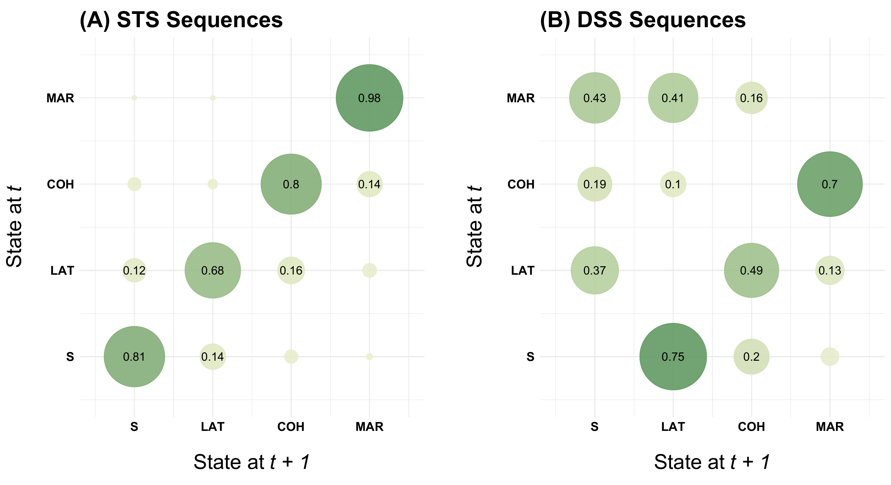
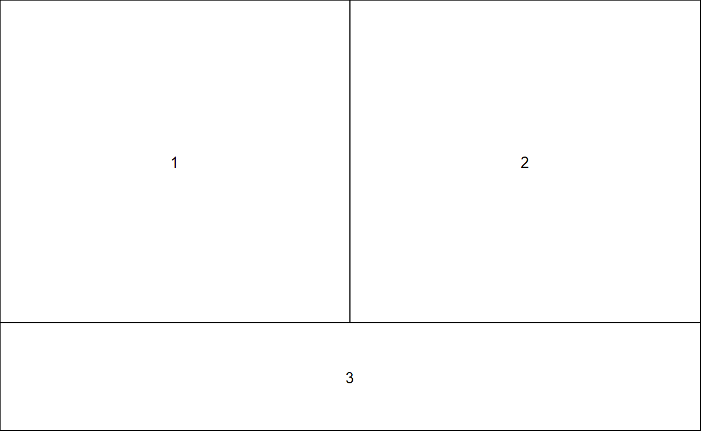
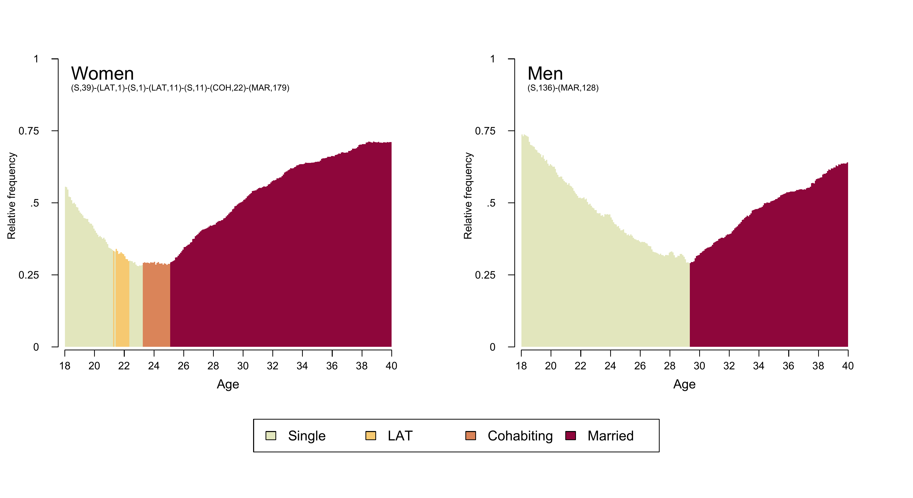
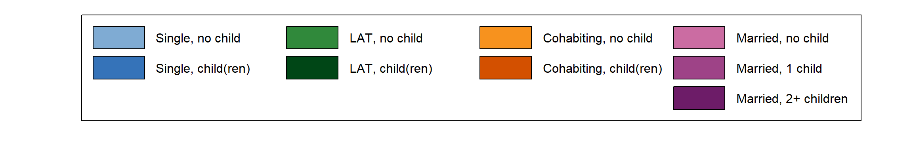
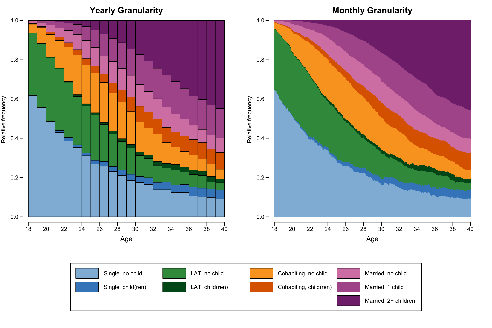
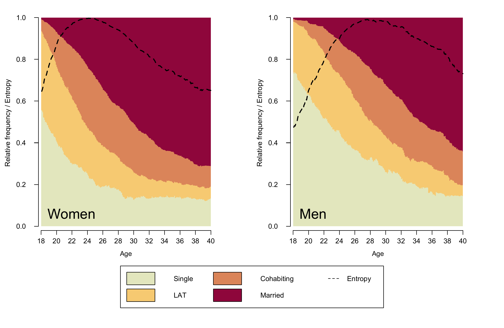

Click here to get instructions…
- Please download and unzip the replication files for Chapter 2 ( Chapter02.zip).
- Read
readme.htmland run2-0_ChapterSetup.R. This will create2-0_ChapterSetup.RDatain the sub folderdata/R. This file contains the data required to re-produce the results shown below. - We also recommend to load the libraries listed in the Chapter 2’s
LoadInstallPackages.R
# assuming you are working within .Rproj environment
library(here)
# install (if necessary) and load other required packages
source(here("source", "load_libraries.R"))
# load environment generated in "2-0_ChapterSetup.R"
load(here("data", "R", "2-0_ChapterSetup.RData"))The figures in the book are printed in grayscale. Here we present the colored versions of the figures. The zip archive with the replication files for chapter 2 contains both the code required to produce the grayscale and the colored figures. Note that the code for the grayscale plots rendered with seqplot is considerably longer than the code for the colored figures because adding shading lines requires some extra coding (see tutorial Color palette: Grayscale Edition)
The first plots presented in Chapter 2.4.1 are based on a reduced alphabet distinguishing four different partnership states. For the last examples we use a extended state space that combines information on partnership status and fertility. The corresponding tabular presentation can be found here.
Transition plot
Figure 2.1 is one of very few plots in the book which is not generated by using the {TraMineR} package. It is rendered using {ggplot2}. The transition matrix is obtained by {TraMineR}’s seqtrate function and turned into a dataframe using {reshape2}’s melt function.
The figure shows two transitions plots. The first is based on sequences stored in the STS format (allows for recurrence of the same state) while the second uses data stored in the DSS format (focusing on the order of distinct states).
The following code chunk illustrates how to generate the data for the transition plot based on STS sequences:
# ... using yearly sequence data (STS format)
transmat <- seqtrate(partner.year.seq)
rownames(transmat) <- c(1, 2, 3, 4)
colnames(transmat) <- c(1, 2, 3, 4)
seqtrate_df <- as_tibble(reshape2::melt(transmat)) %>%
rename(origin = Var1,
destination = Var2)
seqtrate_df# A tibble: 16 x 3
origin destination value
<int> <int> <dbl>
1 1 1 0.809
2 2 1 0.120
3 3 1 0.0379
4 4 1 0.00668
5 1 2 0.143
6 2 2 0.681
7 3 2 0.0209
8 4 2 0.00634
9 1 3 0.0389
10 2 3 0.157
11 3 3 0.801
12 4 3 0.00256
13 1 4 0.00954
14 2 4 0.0424
15 3 4 0.140
16 4 4 0.984
Alternative approach using pivot_longer instead of melt
{reshape2} has been declared  . Therefore, we also briefly illustrate how to produce the dataframe for the transition plot using
. Therefore, we also briefly illustrate how to produce the dataframe for the transition plot using {tidyr}’s pivot_longer.
transmat <- seqtrate(partner.year.seq)
seqtrate_df <- as_tibble(transmat, .name_repair = ~as.character(1:4)) %>%
mutate(origin = row_number()) %>%
pivot_longer(1:4,
names_to = "destination",
names_transform = list(destination = as.integer))
seqtrate_df# A tibble: 16 x 3
origin destination value
<int> <int> <dbl>
1 1 1 0.809
2 1 2 0.143
3 1 3 0.0389
4 1 4 0.00954
5 2 1 0.120
6 2 2 0.681
7 2 3 0.157
8 2 4 0.0424
9 3 1 0.0379
10 3 2 0.0209
11 3 3 0.801
12 3 4 0.140
13 4 1 0.00668
14 4 2 0.00634
15 4 3 0.00256
16 4 4 0.984 Based on this dataframe the transition plot is generated using {ggplot2}’s geom for scatterplots (geom_point). The point size is linked the size of the observed transition rates (size = value). Likewise, the color of the points (bubbles) is tied to the transition rates using scale_color_continuous_sequential from the {colorspace} library. For transitions rates exceeding a threshold of .10 we also print the observed values using geom_text. The remainder of the rather verbose ggplot command is concerned with the labeling of the axes and the overall appearance (i.e., theme) of the plot. It’s beyond the scope of this website to provide an introduction to {ggplot2} and we refer to excellent resources such as the R Graph Gallery, Kieran Healy’s practical introduction on Data Visualization, or the tutorials by Cédric Scherer.
# note: color palette is a little reverence to the iconic "green" of QASS
fig.sts <- seqtrate_df %>%
ggplot(aes(x = destination, y = origin)) +
geom_point(aes(color = value, size = value), alpha = .9) +
scale_color_continuous_sequential(palette = "Green-Yellow",
begin = 0.2, end = 0.8) +
scale_size(range = c(0, 30)) +
geom_text(data = filter(seqtrate_df, value>.10),
aes(label=round(value, 2)), size = 4) +
ggtitle("(A) STS Sequences") +
scale_x_continuous(name=expression('State at'~italic("t + 1")),
breaks=c(1,2,3,4),
labels=c("S", "LAT", "COH", "MAR"),
limits=c(0.5, 4.5)) +
scale_y_continuous(name=expression('State at'~italic("t")),
breaks=c(1,2,3,4),
labels=c("S", "LAT", "COH", "MAR"),
limits=c(0.5, 4.5)) +
theme_minimal() +
theme(plot.margin = unit(c(5.5, 20.5, 5.5, 0.5), "pt"),
legend.position = "none",
title = element_text(size = 18, face = "bold"),
axis.text = element_text(color = "black",
size = 12, face = "bold"),
axis.title = element_text(color = "black",
size = 20, face = "bold"),
axis.title.y = element_text(margin = margin(0, 20, 0, 0)),
axis.title.x = element_text(margin = margin(20, 0, 0, 0))) We store the plot in fig.sts, combine it with the second plot fig.dss (based on sequences stored in the DSS format) using {patchwork}, and save the resulting figure in the desired formats.
The same procedure for sequences in DSS format
# ... using yearly sequence data converted to DSS format (spell perspective)
transmat <- seqtrate(seqdss(partner.year.seq))
rownames(transmat) <- c(1, 2, 3, 4)
colnames(transmat) <- c(1, 2, 3, 4)
seqtrate_df <- as_tibble(reshape2::melt(transmat)) %>%
rename(origin = Var1,
destination = Var2)
fig.dss <- seqtrate_df %>%
ggplot(aes(x = destination, y = origin)) +
geom_point(aes(color = value, size = value), alpha = .9) +
scale_color_continuous_sequential(palette = "Green-Yellow",
begin = 0.2, end = 0.8) +
scale_size(range = c(0, 30)) +
geom_text(data = filter(seqtrate_df, value>.10),
aes(label=round(value, 2)), size = 4) +
ggtitle("(B) DSS Sequences") +
scale_x_continuous(name=expression('State at'~italic("t + 1")),
breaks=c(1,2,3,4),
labels=c("S", "LAT", "COH", "MAR"),
limits=c(0.5, 4.5)) +
scale_y_continuous(name=expression('State at'~italic("t")),
breaks=c(1,2,3,4),
labels=c("S", "LAT", "COH", "MAR"),
limits=c(0.5, 4.5)) +
theme_minimal() +
theme(plot.margin = unit(c(5.5, 0.5, 5.5, 20.5), "pt"),
legend.position = "none",
title = element_text(size = 18, face = "bold"),
axis.text = element_text(color = "black",
size = 12, face = "bold"),
axis.title = element_text(color = "black",
size = 20, face = "bold"),
axis.title.y = element_text(margin = margin(0, 20, 0, 0)),
axis.title.x = element_text(margin = margin(20, 0, 0, 0))) fig.sts + fig.dss
ggsave(here("figures", "2-4-1_Fig2-1_TransitionPlot_color.pdf"),
width = 12, height = 6.55, device = cairo_pdf)
pdf_convert(here("figures", "2-4-1_Fig2-1_TransitionPlot_color.pdf"),
format = "png", dpi = 300, pages = 1,
here("figures", "2-4-1_Fig2-1_TransitionPlot_color.png"))

Modal state plot
For the modal state plot we use a state space of four partnership states stored in the sequence object partner.month.seq. Then we define two objects (modal_women and modal_men) storing the modal sequence for women and men in SPS format. The modal sequence is extracted with {TraMineR}’s seqmodst function. Note that we subset with reference to the source dataframe family which contains the sequence variables as well as additional indicators such as gender (sex). The subsetting - e.g. [family$sex==1,] - only works correctly if the rows in the sequence object partner.month.seq are arranged in the same sorting order as the rows in the family dataframe.
modal_women <- seqdef(as_tibble(seqmodst(partner.month.seq[family$sex==1,])))
modal_women <- print(modal_women, format = "SPS")
modal_men <- seqdef(as_tibble(seqmodst(partner.month.seq[family$sex==0,])))
modal_men <- print(modal_men, format = "SPS")The sequence object partner.month.seq stored in 2-0_ChapterSetup.RData already contains a user defined color palette of based on {colorspace}’s “Heat” palette. The palette was defined with the sequential_hcl function.
colspace.partner <- sequential_hcl(4, palette = "Heat", rev = TRUE)
colspace.partner[1] "#E2E6BD" "#F6C971" "#DA8459" "#8E063B"swatchplot(colspace.partner)If you want to access or change the color palette of a sequence object you have to use the corresponding attribute
attributes(partner.month.seq)$cpal[1] "#E2E6BD" "#F6C971" "#DA8459" "#8E063B"If you just want to change the palette for a specific seqplot call, you also could temporarily overrule a sequence object’s color palette by defining an alternative palette using the argument cpal.
Figure 2.2. is a combined graph depicting the modal partnership trajectories for men and women. It is composed using {TraMineR}’s seqmsplot and by arranging the plots with base R’s graphics::layout. The layout required for Figure 2.2. consists of three elements: two modal state plots and one joint legend. The desired plot composition is obtained by the following layout specification.
# use layout for generating a combined graph
layout.fig1 <- layout(matrix(c(1,2,3,3), 2, 2, byrow = TRUE),
heights = c(.75,.25))
layout.show(layout.fig1)
Once the layout has been defined the empty spaces are occupied in the specified order: 1. Modal state plot for women 2. Modal state plot for men 3. Joint Legend
In our figure we enhanced the regular modal state plots by displaying the modal sequences in SPS format in the upper left corner of the plot area using graphics::text. In addition, we did not want to display seqmsplot’s default title/caption (?) output “Modal state sequence (# occurrences, freq=#%)” which indicates how often the modal sequences is observed in the data. This is because in many applications the modal sequence is not actually observed (this is also true for the data used here). Unfortunately, the default caption seems to be hard coded into seqmsplot and we did not find a straight-forward solution of getting rid of it. A quick-and-dirty workaround to the problem is shown in the code below: we simply add a white box with graphics::rect that is overplotting the default text.
The legend is the third element of our plot arrangement. In this example we produce the legend using {TraMineR}’s seqlegend. Different from the default legend function, seqlegend can be produced as a standalone plot. If you want to produce the legend with the legend function, you first have to draw an empty plot (see here for an example).
Note that the following code does not display the plot in your interactive R session but rather saves it as .pdf/.png file with the specified width, height and dpi parameters. This procedure ensures that the figure can be exactly reproduced on different devices.
cairo_pdf(here("figures", "2-4-1_Fig2-2_seqmsplot_color.pdf"),
width=12,
height=6.55)
layout.fig1 <- layout(matrix(c(1,2,3,3), 2, 2, byrow = TRUE),
heights = c(.75,.25))
layout.show(layout.fig1)
par(mar = c(2, 4, 0, 4) + 0.1, las = 1,
mgp=c(2.7,1,-.5))
seqmsplot(partner.month.seq[family$sex==1,],
ylab = "Relative frequency ", # add spaces for alignment (there might be better solutions)
with.legend = "FALSE", border = NA, axes = FALSE)
rect(10, 1.05, 254, 1.15, col = "white", border = NA)
text(5,.95, "Women", cex = 1.75, adj = c(0,.5))
text(5,.9, modal_women, cex = .8, adj = c(0,.5))
par(mgp=c(3,1,0.25))
axis(1, at=(seq(0,264, by = 24)), labels = seq(18,40, by = 2))
mtext(text = "Age", cex = 1,
side = 1,#side 1 = bottom
line = 2.5)
par(mar = c(2, 4, 0, 4) + 0.1, las = 1,
mgp=c(2.7,1,-.5))
seqmsplot(partner.month.seq[family$sex==0,],
ylab = "Relative frequency ",
with.legend = "FALSE", border = NA, axes = FALSE)
rect(10, 1.05, 254, 1.15, col = "white", border = NA)
text(5,.95, "Men", cex = 1.75, adj = c(0,.5))
text(5,.9, modal_men, cex = .8, adj = c(0,.5))
par(mgp=c(3,1,0.25))
axis(1, at=(seq(0,264, by = 24)), labels = seq(18,40, by = 2))
mtext(text = "Age", cex = 1,
side = 1,#side 1 = bottom
line = 2.5)
par(mar=c(0, 1, 0, 1))
seqlegend(partner.month.seq, cex = 1.3, position = "center",
ncol = 4)
dev.off()
pdf_convert(here("figures", "2-4-1_Fig2-2_seqmsplot_color.pdf"),
format = "png", dpi = 300, pages = 1,
here("figures", "2-4-1_Fig2-2_seqmsplot_color.png"))
State distribution plots
The state distribution plots shown in Figure 2.3 is using sequence data with an alphabet of size nine combining information on partnership status and fertility. Below we only show the code for generating a colored version of the plot. For technical details on generating a grayscale version please visit the respective tutorial page.
We start generating our plot by fine-tuning the appearance of the legend (for a detailed account of the procedure see here). We add “blank” entries (no label, white boxes) to ensure that each of the columns in the legend corresponds to a distinct partnership state (Single, LAT, Cohabitation, Marriage).
# ...adding empty labels below Single, LAT, and Cohabitation
longlab.partner.child2 <- append(longlab.partner.child, "", after=2)
longlab.partner.child2 <- append(longlab.partner.child2, "", after=5)
longlab.partner.child2 <- append(longlab.partner.child2, "", after=8)
# ...adding white cells below Single, LAT, and Cohabitation
colspace.partner.child2 <- append(colspace.partner.child,"#FFFFFF",after=2)
colspace.partner.child2 <- append(colspace.partner.child2,"#FFFFFF",after=5)
colspace.partner.child2 <- append(colspace.partner.child2,"#FFFFFF",after=8)
# ...defining border colors for the boxes in legend:
# regular color = black
# color for empty cells = white
bordercol.partner.child <- c(rep(c("black","black","White"),3),
rep("black", 3))
# source a tweaked version of the legend function
source(here("source", "legend_large_box.R"))
# Produce a test version of the legend (empty plot with legend)
plot(NULL ,xaxt='n',yaxt='n',bty='n',ylab='',xlab='', xlim=0:1, ylim=0:1)
legend_large_box("center", legend = longlab.partner.child2,
ncol=4, fill=colspace.partner.child2,
border = bordercol.partner.child,
box.cex=c(4.5,1.5), y.intersp=2,
inset=c(0,-.4), xpd=TRUE)
The final figure is combining three plots using the layout function. It presents two distribution plots based on sequences of (1) yearly and (2) monthly granularity as well as (3) the joint legend.
cairo_pdf(here("figures", "2-4-1_Fig2-3_DplotYearMonth_color.pdf"),
width=12,
height=8)
layout.fig1 <- layout(matrix(c(1,2,3,3), 2, 2, byrow = TRUE),
heights = c(.75,.25))
layout.show(layout.fig1)
par(mar=c(4, 3, 3, 2), las = 1,
mgp=c(2,1,-.4)) # because y-axis is too far away from plot region
seqdplot(partner.child.year.seq, # yearly granularity
ylab = "Relative frequency",
with.legend = "FALSE" , axes = FALSE,
main = "Yearly Granularity", cex.main = 1.5,
cpal = colspace.partner.child)
par(mgp=c(3,1,0.5)) # adjust parameters for x-axis
axis(1, at=(seq(0,22, by = 2)), labels = seq(18,40, by = 2))
mtext(text = "Age",
side = 1,#side 1 = bottom
line = 2.5)
par(mar=c(4, 3, 3, 2), las = 1,
mgp=c(2,1,-.4))
seqdplot(partner.child.month.seq, , # monthly granularity
ylab = "Relative frequency",
with.legend = "FALSE", axes = FALSE, border = NA,
main = "Monthly Granularity", cex.main = 1.5,
cpal = colspace.partner.child)
par(mgp=c(3,1,0.5))
axis(1, at=(seq(0,264, by = 24)), labels = seq(18,40, by = 2))
mtext(text = "Age",
side = 1,#side 1 = bottom
line = 2.5)
par(mar=c(0, 1, 0, 1))
plot(NULL ,xaxt='n',yaxt='n',bty='n',ylab='',xlab='', xlim=0:1, ylim=0:1)
legend_large_box("center", legend = longlab.partner.child2,
ncol=4, fill=colspace.partner.child2,
border = bordercol.partner.child,
box.cex=c(4.5,1.5), y.intersp=2,
inset=c(0,-.4), xpd=TRUE)
dev.off()
pdf_convert(here("figures", "2-4-1_Fig2-3_DplotYearMonth_color.pdf"),
format = "png", dpi = 270, pages = 1, antialias = TRUE,
here("figures", "2-4-1_Fig2-3_DplotYearMonth_color.png"))
State distribution plots with entropy
Figure 2.4 is an enhanced version of a state distribution plot of partnership biographies (partner.month.seq) by gender (stored in the dataframe family) which also displays the Shannon entropy. The plot requires some adjustment of the legend (adding an entry for “Entropy”) and two objects that store the gender-specific entropy distributions.
# Define color palette
colspace.partner <- sequential_hcl(4, palette = "Heat", rev = TRUE)
# Adjust legend to accommodate additional information (Entropy)
col.legend <- c(colspace.partner, "white") # add additional (white) legend key
lab.legend <- c(longlab.partner, "Entropy") # add label for new entry
bcol.legend <- c(rep("black",4), "white") # define border color for legend keys
# Extract Entropy for each sex
# (will be appear as additional line in the state distribution plot)
entropy.women <- seqstatd(partner.month.seq[family$sex==1,])$Entropy
entropy.men <- seqstatd(partner.month.seq[family$sex==0,])$EntropyAfter these adjustments the figure can be composed using the layout function: Two the gender-specific plots are arranged side-by-side and the joint legend is placed at the bottom of the figure (layout matrix: 1 - women; 2 - men; 3 - legend). When drawing the two distribution plots lines for corresponding entropies are added with the lines function. Finally, an adjusted version of the legend - including a new entry for entropy - completes the figure.
cairo_pdf(here("figures", "2-4-2_Fig2-4_DplotEntropy_color.pdf"),
width=10,
height=6.5)
layout.fig1 <- layout(matrix(c(1,2,3,3), 2, 2, byrow = TRUE),
heights = c(.75,.25))
layout.show(layout.fig1)
par(mar = c(2, 4, 2, 4) + 0.1, las = 1,
mgp=c(2.7,1,-.5))
seqdplot(partner.month.seq[family$sex==1,], ylab = "Relative frequency / Entropy",
with.legend = "FALSE", border = NA, axes = FALSE,
cpal = colspace.partner)
text(10,.06, "Women", cex = 2, adj = c(0,.5))
lines(entropy.women, col = "black", lwd = 2, lty = 2)
par(mgp=c(3,1,0.25))
axis(1, at=(seq(0,264, by = 24)), labels = seq(18,40, by = 2))
mtext(text = "Age", cex = .8,
side = 1,#side 1 = bottom
line = 2.5)
par(mar = c(2, 4, 2, 4) + 0.1, las = 1,
mgp=c(2.7,1,-.5))
seqdplot(partner.month.seq[family$sex==0,], ylab = "Relative frequency / Entropy",
with.legend = "FALSE", border = NA, axes = FALSE,
cpal = colspace.partner)
text(10,.06, "Men", cex = 2, adj = c(0,.5))
lines(entropy.men, col = "black", lwd = 2, lty = 2)
par(mgp=c(3,1,0.25))
axis(1, at=(seq(0,264, by = 24)), labels = seq(18,40, by = 2))
mtext(text = "Age", cex = .8,
side = 1,#side 1 = bottom
line = 2.5)
par(mar=c(0, 1, 0, 1))
plot(NULL ,xaxt='n',yaxt='n',bty='n',ylab='',xlab='', xlim=0:1, ylim=0:1)
# Alternative specification of legend (using tweaked version of legend)
legend_large_box("center", legend = lab.legend,
ncol=3, fill=col.legend,
lty=c(rep(0,4),2), border = bcol.legend,
box.cex=c(4.5,1.5), y.intersp=2,
inset=c(0,-.4), xpd=TRUE)
dev.off()
pdf_convert(here("figures", "2-4-2_Fig2-4_DplotEntropy_color.pdf"),
format = "png", dpi = 289, pages = 1, antialias = TRUE,
here("figures", "2-4-2_Fig2-4_DplotEntropy_color.png"))